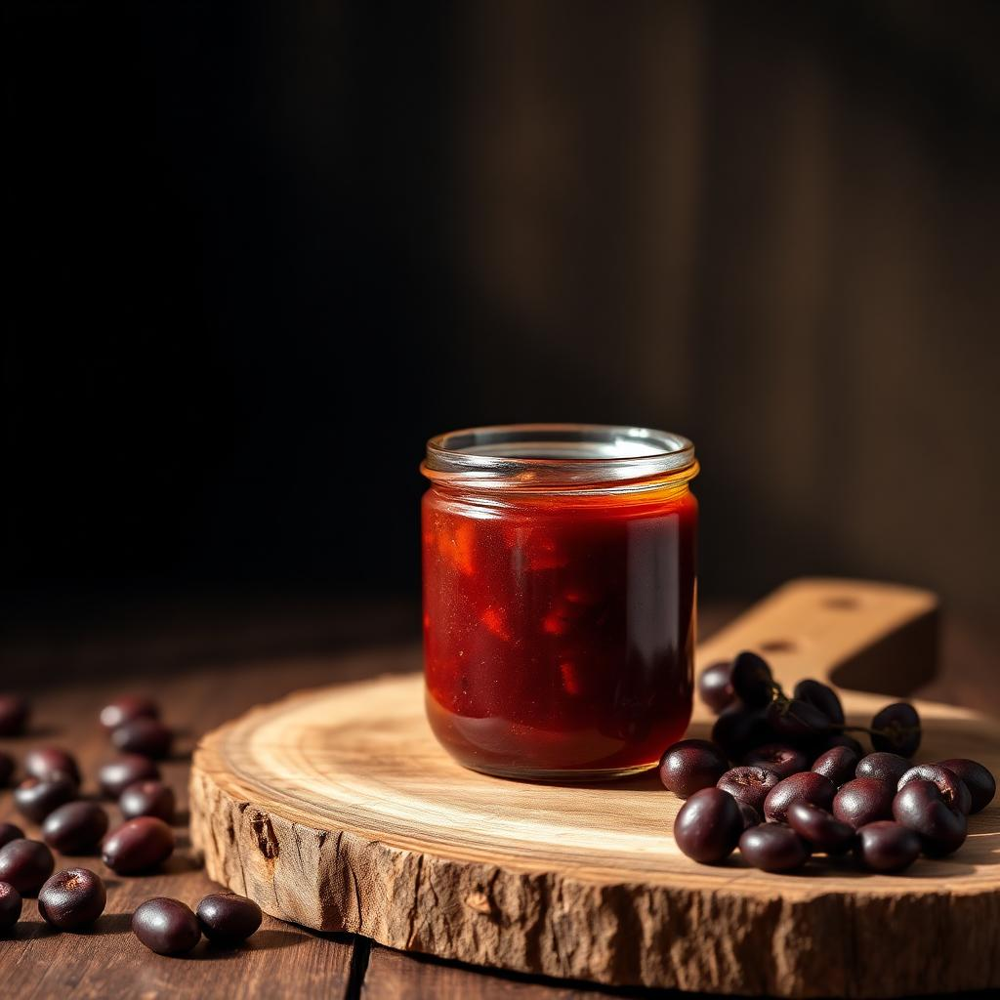
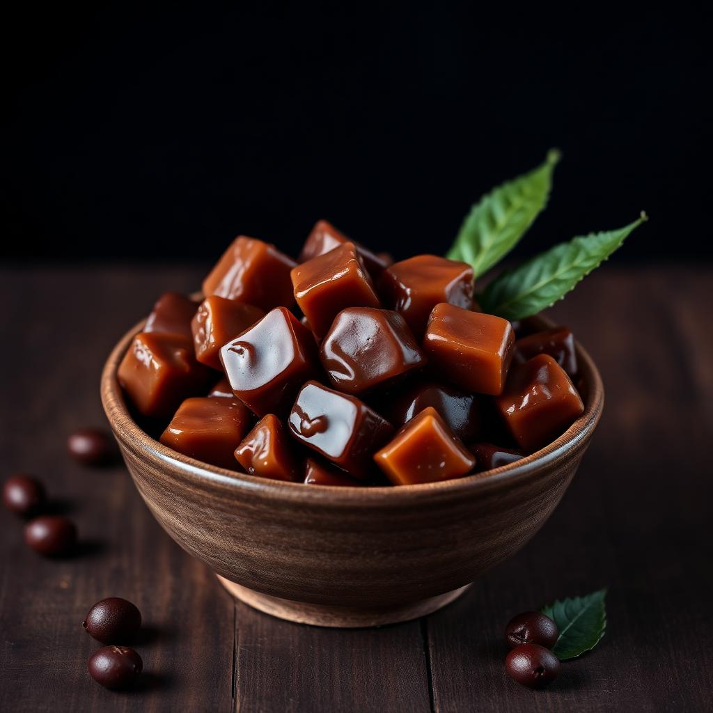

Mermelada exótica de cáscara de Café
Una experiencia gastronómica con notas agridulces y toques de frutos rojos, rica en antioxidantes naturales del café.
Beneficios:
- Alto contenido de antioxidantes
- Fuente natural de fibra
- Sabor único y sofisticado
- Perfecto para desayunos gourmet
Dulce Artesanal de Cáscara de Café
Confitería artesanal que transforma la cáscara en un manjar dulce y reconfortante con notas a frutos oscuros.
Beneficios:
- Rico en potasio natural
- Energía sostenible
- Textura glaseada perfecta
- Ideal para acompañar café o té
